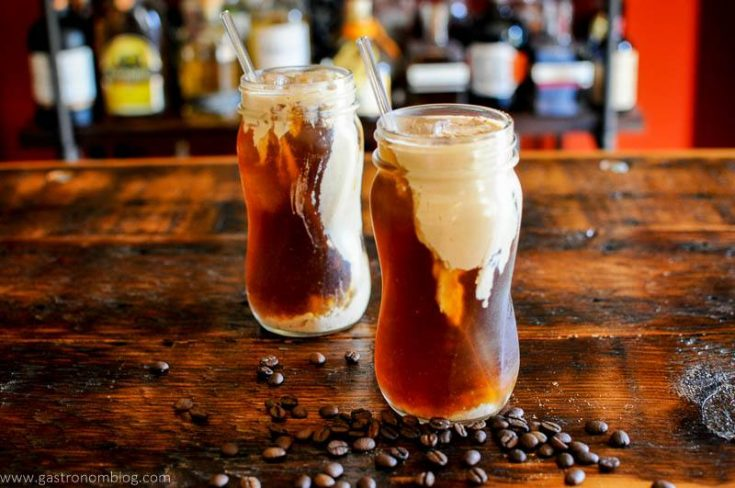
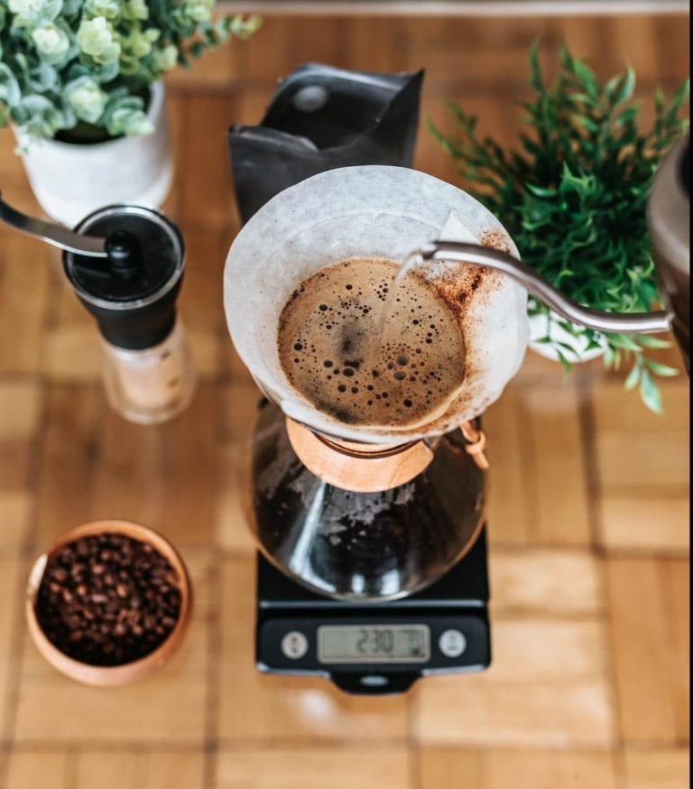
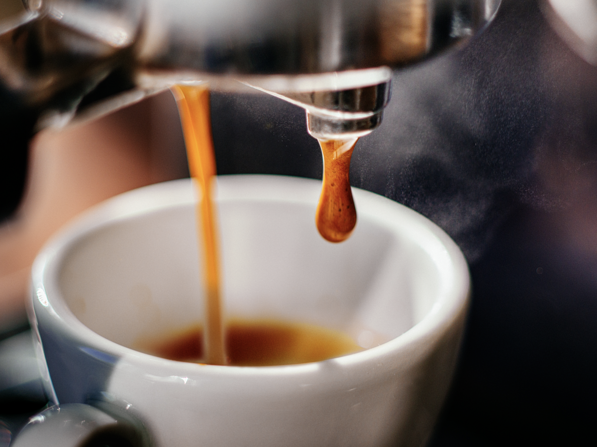
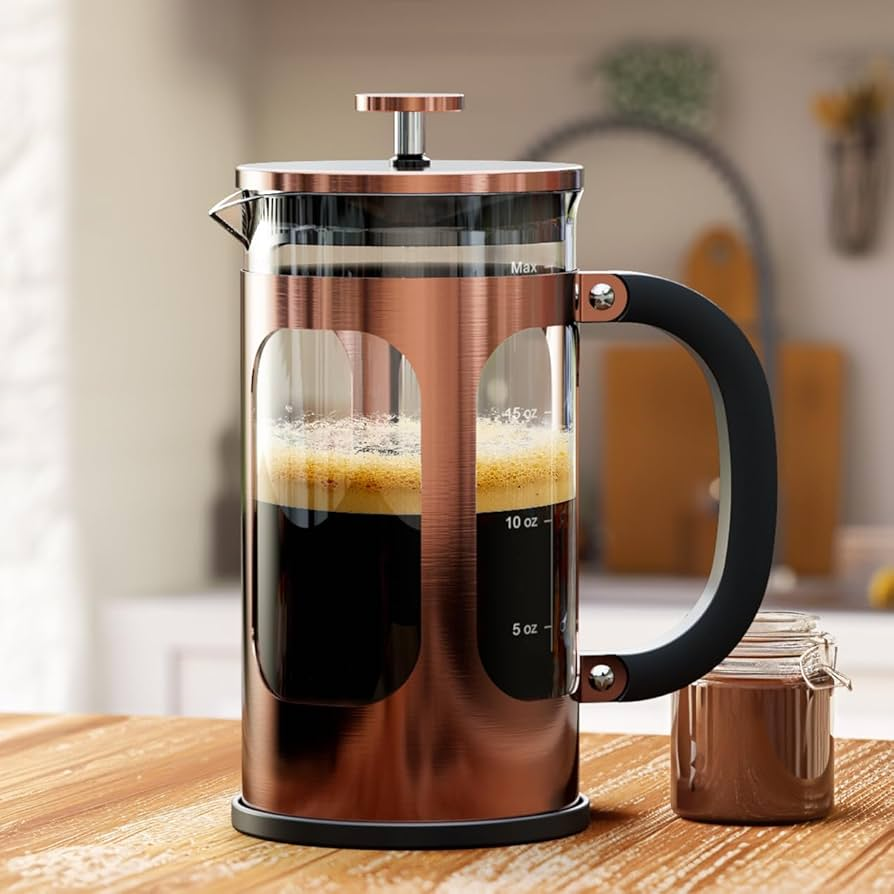
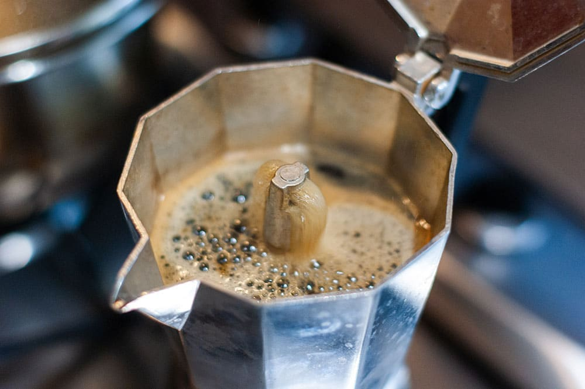
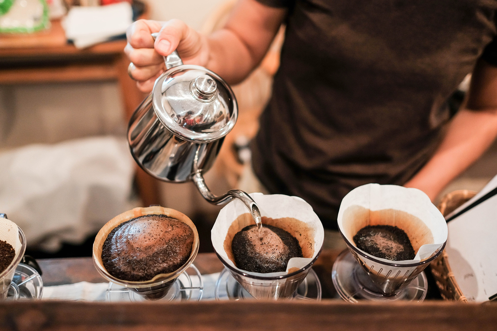
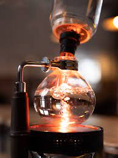

Concentrated, bold shot made with high-pressure extraction. Perfect for strong coffee or milk-based drinks.








Courses
Welcome to Coffee Blog Courses, your go-to hub for mastering coffee brewing! Whether you're a beginner or a seasoned enthusiast, our courses cover the top 8 coffee extraction methods, from pour-over and French press to AeroPress and cold brew. Learn to unlock the full potential of your beans and brew the perfect cup every time. Let's elevate your coffee game together!
Classic, clean brew from an automatic machine. Ideal for quick, consistent cups.
Drip-Coffee
Read More
Full-bodied, rich coffee steeped in hot water. Great for a robust, textured flavor.
French Press
Read More
Bright, nuanced coffee made by manually pouring hot water over grounds. For precision and clarity.
Pour-Over
Read More
Smooth, versatile coffee using immersion and pressure. Portable and easy to use.
AeroPress
Read More
Smooth, low-acidity coffee steeped in cold water for 12-24 hours. Perfect for iced coffee.